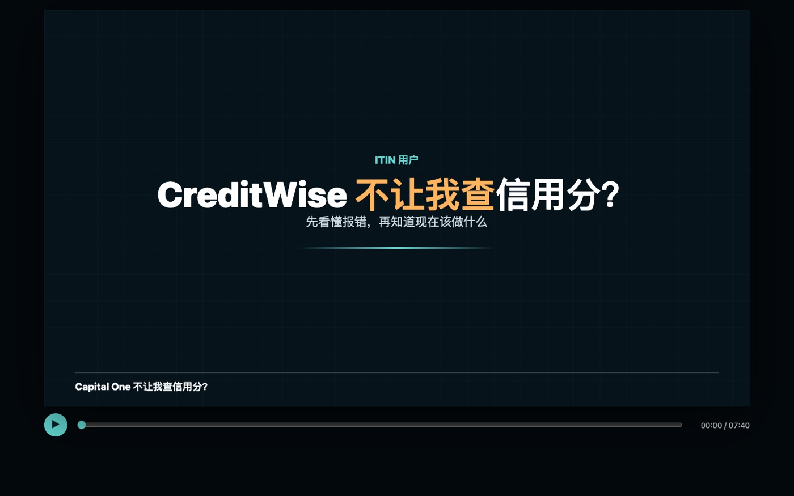
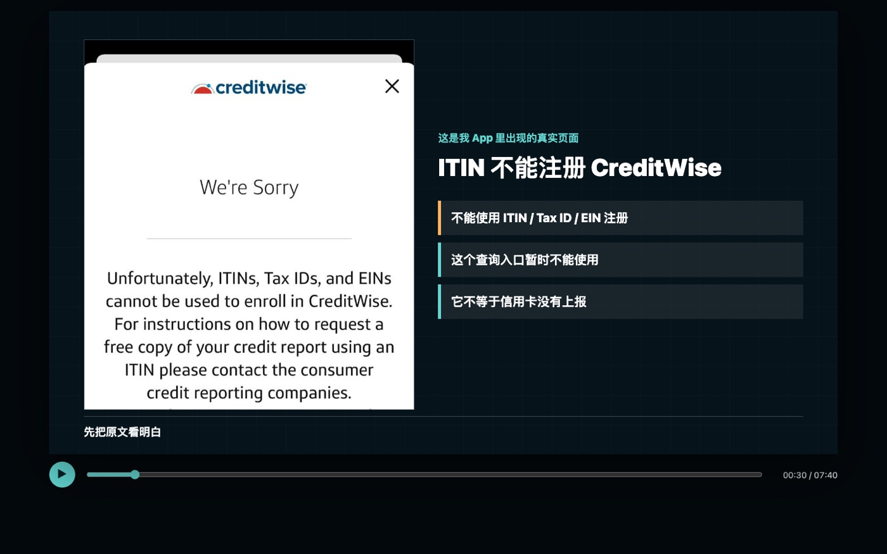
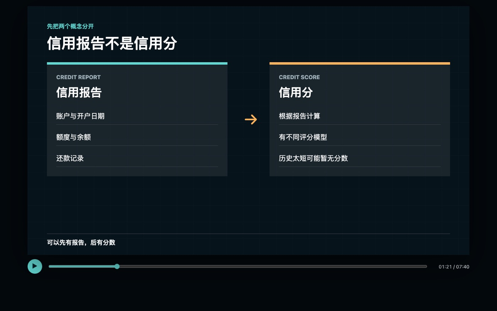
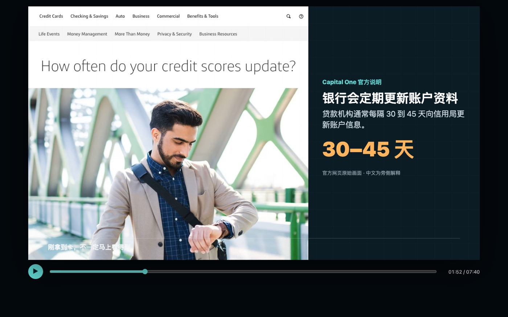
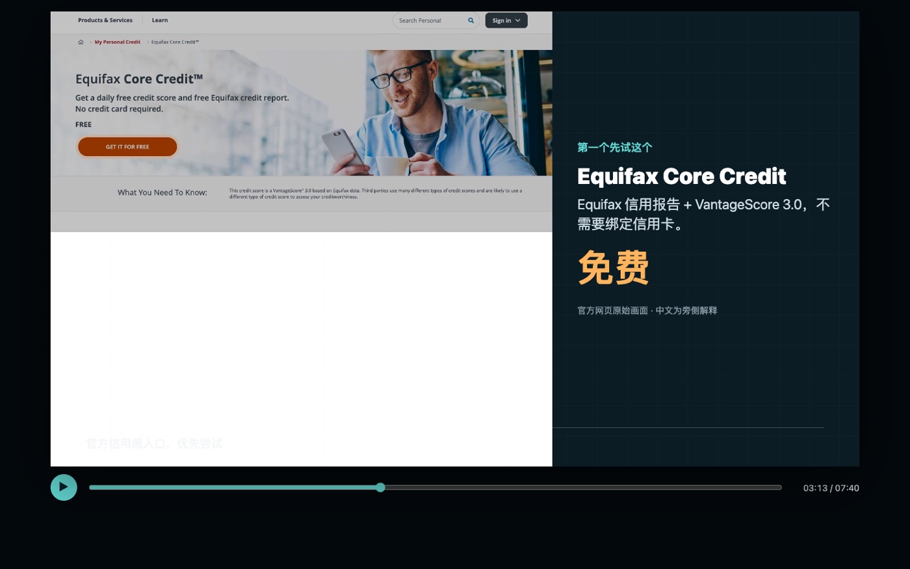
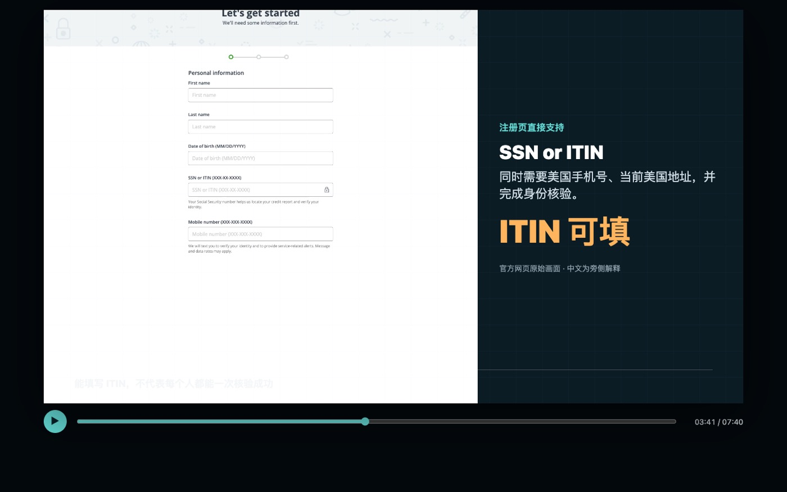
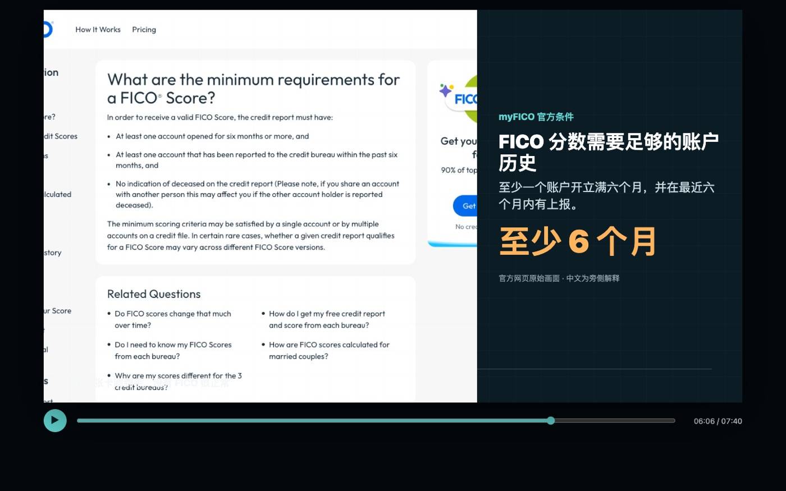
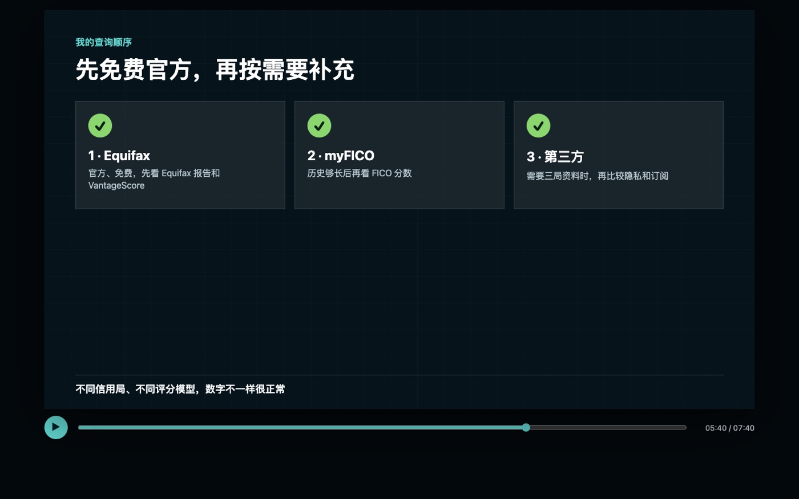
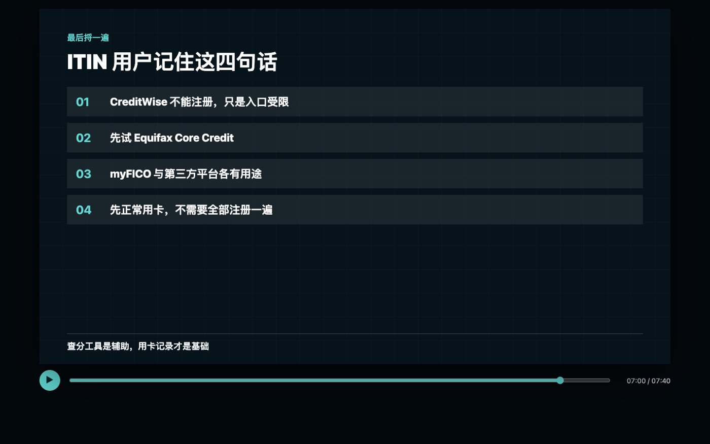

先说结论：CreditWise 查询入口无法使用，不等于信用卡没有向信用机构提供账户资料，也不等于建信失败。查询资格、信用报告是否形成，以及能否生成某一种信用分，是三个不同的问题。

CreditWise 页面为什么显示 “We're Sorry”
拿到 Capital One 以后，我一直想看看自己的美国信用记录有没有开始建立。结果我在 App 里点开 CreditWise，看到的不是信用分，而是一页 “We're Sorry”。
我录制时看到的页面写得很直接：ITIN、Tax ID 和 EIN 不能用来注册 CreditWise。也就是说，我虽然已经有 Capital One 信用卡，但暂时不能通过 App 里的这个入口查看信用报告和信用分。

我刚看到的时候也有点懵：CreditWise 进不去，是不是说明 Capital One 根本没有给我建立信用记录？后来查完才发现，不是这个意思。这里被挡住的只是 CreditWise 这个查询入口，不代表信用卡没有向信用局上报。
先分清信用报告和信用分
信用报告，英文叫 credit report，里面记录账户什么时候开、额度多少、余额多少、有没有按时还款。信用分，也就是 credit score，是评分模型根据报告里的资料计算出来的分数。
所以，一个人可以先有信用报告，但因为历史太短，暂时还没有可用的 FICO 分数。不同平台使用的信用局数据和评分模型也可能不同，出现时间与数字不完全一致并不奇怪。

刚开卡后，资料不一定马上出现
我的 Capital One 卡开通以后，我会等待账户资料进入信用档案。Capital One 的公开说明写到，贷款机构通常每 30 到 45 天向信用机构更新一次账户信息，但每家机构都有自己的上报计划和政策。因此刚拿到卡以后，报告里不一定马上能看到，先等过一个上报周期很正常。

真正应该确认什么
真正要确认的，不是 CreditWise 能不能打开，而是信用报告里有没有出现这张 Capital One。报告中通常可以检查：
- 开户日期是否正确；
- 信用额度和当前余额是否合理；
- 账户状态是否显示正常；
- 还款状态有没有错误或异常。
只要报告里能看到这些账户资料，就说明这张卡已经开始进入信用档案。如果报告已经有账户，但页面还没有显示信用分，也不用着急：报告负责记录发生过什么，分数还要看评分模型和账户历史是否足够。
第一种尝试：Equifax Core Credit
如果现在就想在线查看，第一个可以了解的是 Equifax 官方的 Core Credit。Equifax 当前说明中，符合资格的美国消费者可以通过 myEquifax 免费查看 Equifax 信用报告和基于 Equifax 数据的 VantageScore 3.0，而且不要求绑定信用卡。
这里要注意：页面显示的是 VantageScore，不是 FICO 分数。它们是不同的评分模型，不能把一个平台显示的数字直接当成所有银行都会使用的分数。

ITIN 能填，不代表一定能在线通过核验
我查看的 Equifax 注册页面直接写着 “SSN or ITIN”，所以 ITIN 可以填写。不过页面还会要求美国手机号、当前美国地址，并进行身份核验。资料对不上，或者信用档案太薄，都可能暂时注册失败。
失败不等于没有信用记录，也不要在短时间内反复提交。先核对姓名、地址和联系方式是否与账户资料一致；如果在线流程无法完成，再按照 Equifax 官方提供的其他方式联系或申请报告。

第二种尝试：账户历史够长后看 myFICO
第二个可以了解的是 myFICO。它提供 FICO 分数，而不是 VantageScore。不过第一张卡刚开通时，账户历史可能还不够，页面暂时找不到可评分档案也正常。因此它更适合过一段时间再试，不是说有 ITIN 就一定能马上查到。
myFICO 公布的最低评分条件是：信用报告里至少有一个账户已经开立六个月，而且最近六个月内至少有一个账户向信用机构上报。满足最低条件也不代表所有平台会在同一天显示相同结果。

第三方 ITIN 查询平台只作为补充
我还研究了面向 ITIN 用户的第三方平台。例如 ITIN Score 宣称不需要 SSN、可以使用 ITIN 查询报告和分数，但它不是三大信用局官网。填写资料前，需要先看清楚隐私条款、数据来自哪家信用机构，以及页面显示的是什么评分模型。
MyFreeScoreNow 也宣称支持 ITIN 和 SSN，并提供多家信用机构的报告与分数。不过这类服务可能采用试用加会员订阅模式，之后可能自动续费。真要使用，一定先核对当时的价格、续费规则、取消方式和数据授权范围。
我的判断：如果只是想确认第一张卡有没有上报，没有必要一开始就购买订阅。第三方服务的资格、价格、数据来源和条款可能变化，也不保证能够找到或生成本人的信用资料。
我的查询顺序
- 先等待合理的上报时间，并尝试免费的 Equifax Core Credit；
- 账户历史达到 FICO 最低评分条件后，再考虑 myFICO；
- 只有确实需要更多信用局资料时，才谨慎了解 ITIN 专用第三方服务。
不同平台使用的信用局和评分模型不同，看到的数字不一样很正常，不要把几个分数硬比高低，也不要把某个平台暂时无法显示分数理解为建信失败。

总结：打不开 CreditWise，不代表建信失败
CreditWise 不接受 ITIN，只代表我录制时这个入口不能用。我会继续正常使用 Capital One，先尝试免费的 Equifax；等账户历史够长，再看 myFICO。第三方付费服务只作为补充，不需要一开始全部注册。
对刚开卡的人来说，按时全额还款、控制自己能负担的消费，并定期核对信用报告，比天天看分数更重要。任何一种低利用率、提前还款或查询方式，都不能保证信用分一定提高。

免责声明：本文仅为 Evan 的个人经验、账户页面观察和信息整理，不构成金融、税务或法律建议，也不保证 CreditWise、Equifax、myFICO 或第三方服务的注册资格、身份核验、信用报告或分数结果。产品规则、价格和功能可能变化，请以相关机构官方信息及本人账户页面为准。
隐私提醒：不要向不明网站、社交账号或普通邮件发送完整 ITIN、护照、银行账单、信用卡号、验证码或密码。使用任何查询服务前，先确认域名、隐私政策、费用与取消方式。
前后篇
上一篇：没有美国 Checking，怎么还美国信用卡？我为什么选择 Wise
下一篇：申请 ITIN 和美国信用卡，到底值不值？我的真实成本账